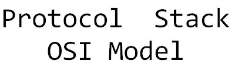
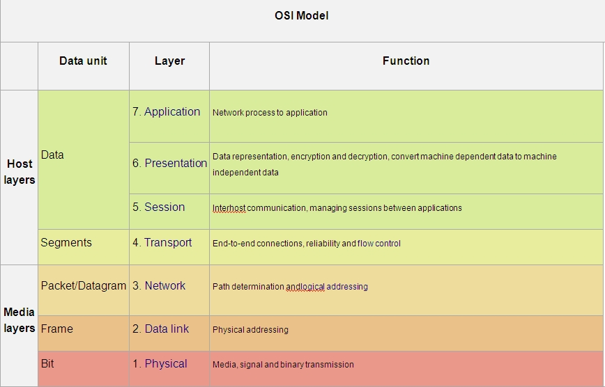

Packet Format
Etherenet Header
IP Header
TCP Header
UDP Header
ICMP Header
Images are taken from the Google (www.google.com)
(c) All rights reserved.
The protocol stack is an implementation of a computer networking protocol suite. The terms are often used interchangeably. Strictly speaking, the suite is the definition of the protocols, and the stack is the software implementation of them. Individual protocols within a suite are often designed with a single purpose in mind. This modularization makes design and evaluation easier. Because each protocol module usually communicates with two others, they are commonly imagined as layers in a stack of protocols. The lowest protocol always deals with "low-level", physical interaction of the hardware. Every higher layer adds more features. User applications usually deal only with the topmost layers. In the Above there is a basic diagram of Protocol Stack (OSI Model). The above picture shows the basic structure of OSI Model.